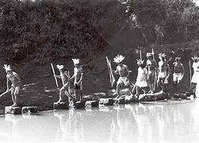
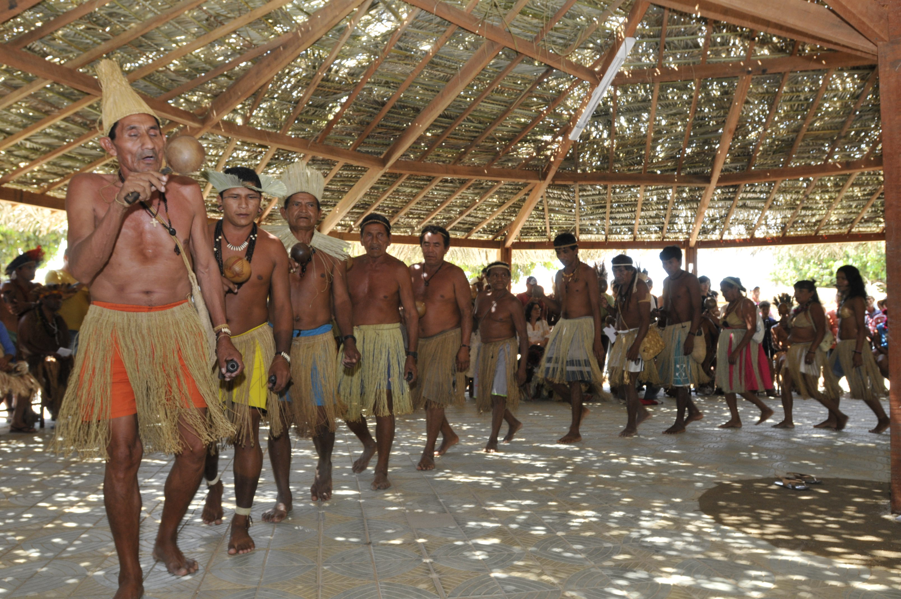
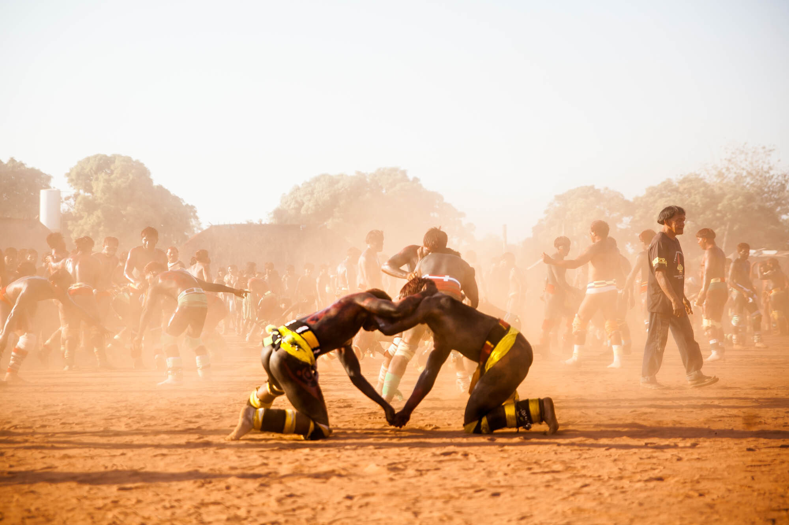
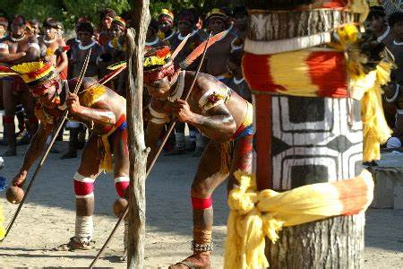
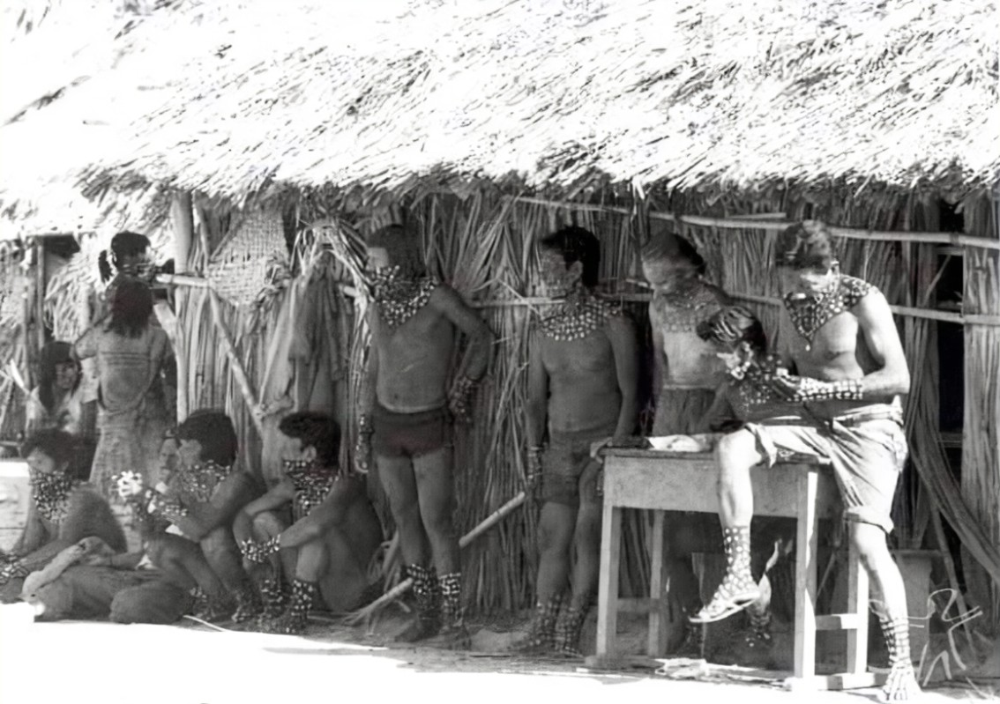
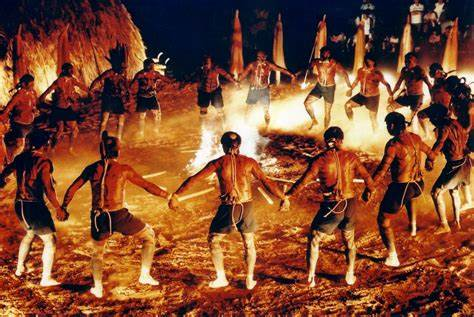

Death is a complex and multifaceted topic, and beliefs about it vary widely among different indigenous cultures. Some cultures believe that death is a natural and inevitable process, while others believe that death is caused by supernatural forces or violations of taboos. Furthermore, many indigenous cultures have specific rituals and traditions to deal with death and honor the dead, we have gathered a little about the culture of some tribes in relation to death and what was done about it, rituals that were or are still practiced as a form of cleaning/purification, as an affective form or even protection.
This ritual is practiced by the Kaingang tribe and is not directly linked to burial, but rather to a second burial. The practice of second burial is more linked to recovery of names and the definitive separation of people from the world of the living. The death of individuals affects the entire community, remaking gestures and the path of the ancestors, the ritual recomposes the community and restructures the world.


The widow ritual is another rite also practiced by the Kaingang tribe and begins when the family that the woman's husband belongs to is announced. died, after saying goodbye to her husband, the now widow is taken to the forest where she will undergo the purification ritual, away from everyone's eyes, she will remain behind days necessary to purify herself, if the deceased is kamẽ, the widow will be between 30 to 40 days of purification, if it is kairu it will be less
days, 5 to 10 days There in the woods, a small grass hut was built for the widow, close to the river, so that she could take her herbal baths, that is, the herbal ritual, was attentive all the time, the old people say that when she took her herbal bath, you would have to tell them to protect you from the spirit of her late husband.
This ritual is performed by the indigenous people of the Alto Xingu region, Mato Grosso, to celebrate the memory of the dead and release their souls into the spiritual world. The ritual originates from the myth about the Pajé Mavutsinim's attempt to resurrect six dead people. According to the Indians of Alto Xingú, the Pajé prepared six wooden trunks that would be transformed into life, and warned that that night anyone who had sexual relations should not leave the house.


Kuarup is a very important festival that takes place once a year in the Alto Xingu Indigenous Park and lasts two days. During the celebrations there is food, dances, songs, prayers and the moment of lamentations - when wooden trunks painted and decorated with yellow and red bands and some objects of the deceased are erected. Each trunk represents a dead person. Kuarup is a wood that gives its name to an indigenous ritual, whose meaning for the Indians is the farewell to the dead and the end of the mourning period.
Bororo funeral rituals are long. Soon after death, the body is placed in the center of the village, in a temporary grave. The pit is watered daily to speed up putrefaction. After decomposition, the bones are cleaned, decorated and placed in a large burial basket. It then stays in the village for about a week before being taken to a lake where the basket will be submerged in the water. The entire process can last from one to three months. It is during this period that numerous rituals are celebrated in honor of the deceased. Podcast: Edgar Teodoro da Cunha


One of the most complex funeral rites, which is no longer performed today, is that performed by the Wari Indians (also called Pakaa-Novas), from Rondônia. They ate their own dead. In addition, they burned the dead person's hair and internal organs, and changed the appearance of the house where he lived and the places he used to go. The explanation they gave for this was that the spirit missed this world, and therefore the living tried to cut
off all memories that could make the spirit want to return to earth, including their own body. Soon after contact with non-indigenous people, in the 1960s, the Wari abandoned this custom and nowadays bury their dead. But older Indians consider burial as a lack of respect However, it is important to note that many indigenous communities face significant challenges regarding violence and mortality. According to the Atlas of Violence, more than 2,000 indigenous people were murdered in Brazil between 2009 and 2019, and the rate of violent deaths of indigenous people increased by 21.6% during this period. These numbers are alarming and highlight the need to protect the human rights of indigenous peoples.